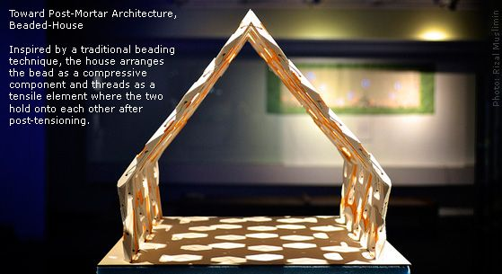
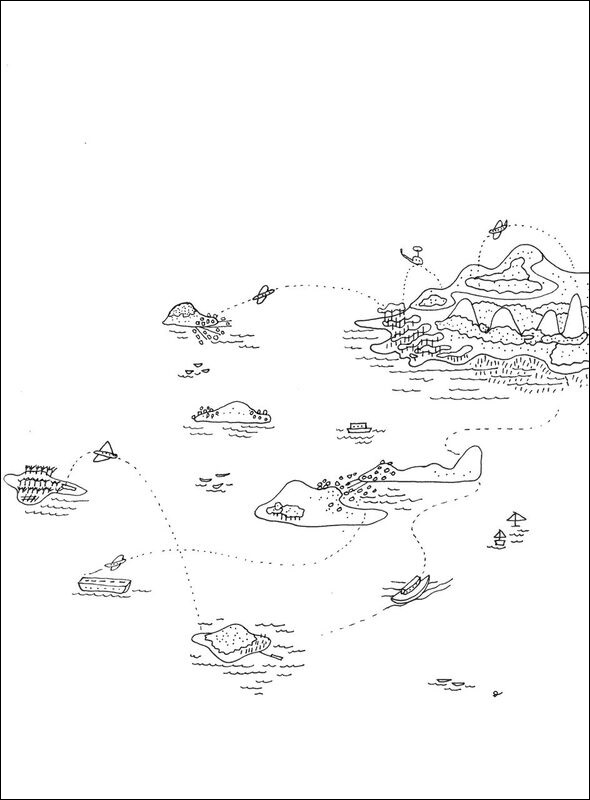

Angklung Performance at MIT SEA Night, Fall Semester 2013
(Song: Yamko Rambe Yamko)
Watch on Youtube (if it is not showing up properly above)
Video originally uploaded online by Azalea Ayuningtyas
Angklung Performance at MIT SEA Night, Fall Semester 2013
(Song: Raindrops Keep Falling on My Head)
Watch on Youtube (if it is not showing up properly above)
Video originally uploaded online by Azalea Ayuningtyas
Saman Dance at MIT SEA Night, Fall Semester 2012
Watch on Youtube (if it is not showing up properly above)
Video originally uploaded online by Azalea Ayuningtyas
Woven-House, by Rizal Muslimin (2013)
One of the winners of the Harold and Arlene Schnitzer Prize (2013) in Visual Arts.
You may also read about it in the MIT News.
Beaded-House, by Rizal Muslimin (2013)

One of the winners of the Harold and Arlene Schnitzer Prize (2013) in Visual Arts.
You may also read about it in the MIT News.
Kenmore Bus Station, by Erioseto Hendranata (2013)
Artwork originally published in the MIT Rune Issue 34.
Munduk, by Diana Ang (2018)
You may find some more of Diana's refreshing artwork here.
Aaaaaaaannnd ... what kind of place is Munduk ?
Archipelago, by Diana Ang (2018)
You may find some more of Diana's refreshing artwork here.
Banyuasri, by Diana Ang (2018)
You may find some more of Diana's refreshing artwork here. Also, what and where on Earth is Banyuasri ?
Rural Network, by Diana Ang (2018)

You may find some more of Diana's refreshing artwork here.
Trek2 kan Samping Gunung, by Diana Ang (2018)
You may find some more of Diana's refreshing artwork here.
Tropical Life, by Diana Ang (2018)
You may find some more of Diana's refreshing artwork here.
The Slow Zone: Alternative Paths for Bali, by Diana Ang (2018)
An animated display of artistic renditions from Diana Ang's S M.Arch S Thesis.